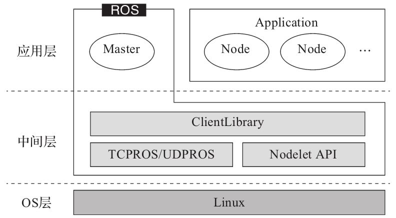
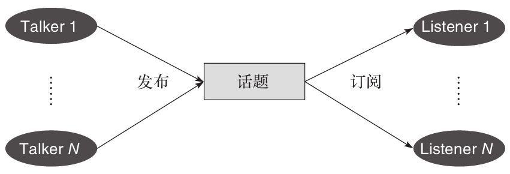
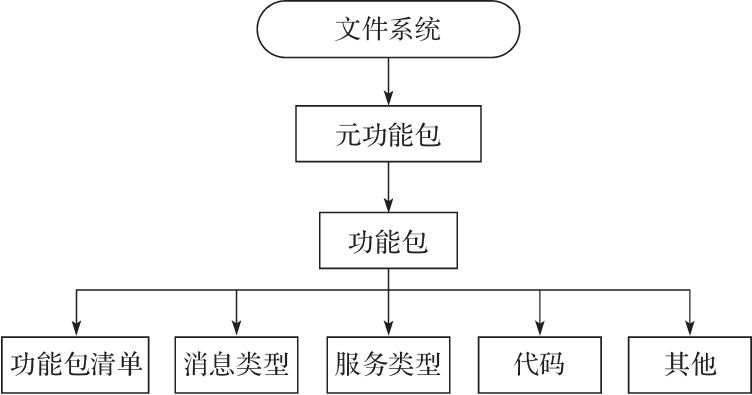
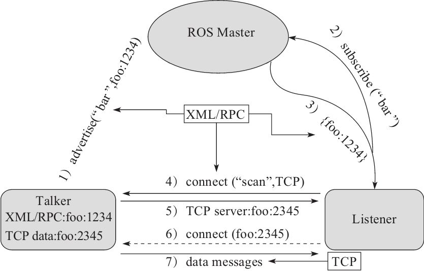
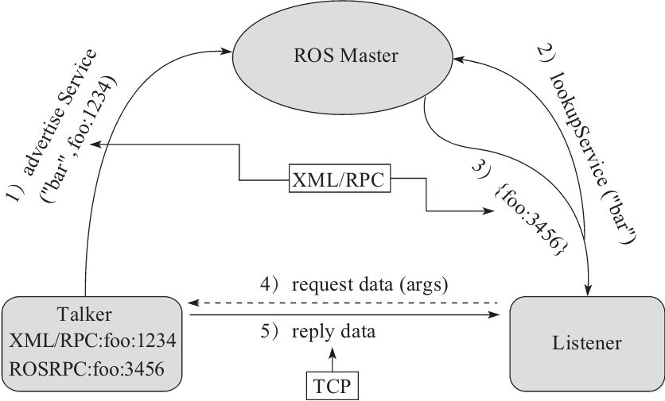
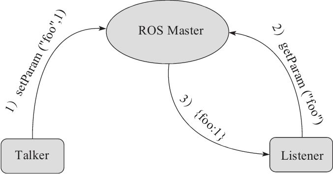

ROS(1)
ROS基础较为重要的点
一、架构图

二、节点、消息、话题、服务、ros master

节点：执行运算任务的进程，通常就是一个代码文件
消息：节点间的通信，消息是一种数据结构
话题：一个节点可以向特定的话题发布消息或者接收来自某个话题的消息
服务：不同于发布/订阅模式，我们将同步双向通信模式称为服务，类似于web服务器。
ROS MASTER:所以节点都要向它注册，由他来提供节点间的通信，查找，连接各种问题。
三、文件系统

元功能包：
实现某一个功能的所有功能包的集合。例如：完成导航这个功能的功能包中含有建图、激光雷达、里程计、传感器等等功能包
四、三种通信机制
4.1、话题通信机制

1) 发布者通过1234端口使用RPC协议向master发布注册信息，包含所发布消息的话题名。
2） 订阅者也同样使用RPC协议向master发送注册信息，包含所要订阅的话题名。
3） 信息匹配：ROS master会根据注册表中信息与接受者所要订阅的话题匹配，一旦找到，将通过RPC协议向订阅者发送发布者的RPC地址信息
4） 订阅者收到发布者的地址后，将尝试通过RPC协议向发布者发送连接请求，包括传输订阅的话题名、消息类型、以及通信协议。
5）发布者接收到连接请求后，任然通过RPC协议向订阅者确认连接请求，并发送自身的TCP地址信息。
6） 订阅者收到确认信息后，使用TCP与发布者建立连接。
7） 成功连接后，不在需要ROS naster， 发布者可以向订阅者发送消息。
note：前5个步骤都需要使用到RPC协议，后两个步骤使用TCP协议。ROS master主要作用就是帮助节点间建立连接。但不参与最终的数据传输。
4.2、 服务通信机制

之前有提过：服务类似于web服务器的通信方式（应答）
1） talker通过1234端口使用RPC协议向master发布注册信息，包含所提供的服务名。
2） listener也同样使用RPC协议向master发送注册信息，包含所要查找的服务名。
3） master根据listener的订阅信息在注册表中匹配，若找到，将通过RPC协议发送talker的TCP地址。
4） listener接收到地址信息后，使用TCP与talker建立连接，并发送服务的请求数据。
5） talker接收到服务请求和参数后，开始执行服务功能，完成后，向listener发送应答数据。
话题通信和服务通信最大的区别：
话题通信通常都是发布者发送，订阅者被动的接收；而listener想要自主获取数据该怎么办呢？服务通信就解决了这个问题，它向master注册了一个特定的服务，listener可以向talker发送请求（采用应答方式）
4.3、参数管理机制

参数类似于ROS中的全局变量，有master管理，通信机制不涉及TCP、UDP通信。
1） talker使用RPC向master发送参数设置数据，包含参数名和数值，master将其保存至参数列表中。
2） listener也通过RPC向master发送参数查找请求，包含要查找的参数名。
3） master根据listener欲查找的参数名在参数列表中匹配，找到后将参数数值发送给listener。（若talker将参数数值变动，listener无法知晓）
 wechat
wechat alipay
alipay